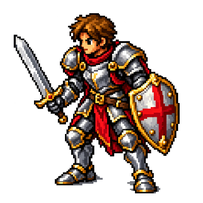

CONHECIMENTO PARA SUA PRÓXIMA JORNADA
Explore o mundo.
Prepare sua próxima hunt.
Criaturas, equipamentos e caminhos. Seu ponto de encontro com o Tibia clássico.

O clássico vive aqui.SEU COMPANHEIRO FORA DO JOGO
Organize sua jornada no Tibia Command.
Conheça o aplicativo para Windows que reúne personagens, quests, hunts e progresso em uma janela própria.